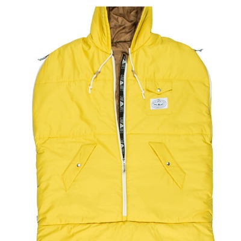
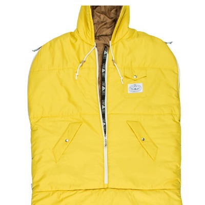

V I B E S
V I B E S
The Napsack has zippers at the shoulders, so you can stick your arms out, and a cinch at the bottom so that you can open it up and stick your legs out. Hike it up to your waist, cinch it, and wear it like a puffy coat around the campfire. Then crawl right back into your tent without ever having to leave the warmth of your bag.
Perfect for summer trips, couch surfing, music festivals, jumping into after snowboarding, surfing or any other activity that brings your core temperature down. Its not too hot for inside and is awesome for wearing around the house in the winter.
The chest pocket fits a phone and has a pass through hole for your headphones to run internally, and it has pockets like a puffy jacket.
_______________styles_______________
 
